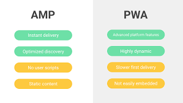

PWA, Why is it important ?

It is a myth that the users will happily download the app of every website they visit frequently. According to Comscore Mobile App Report, over 50% of America’s smart phone users download Zero Apps a month. i.e. Gone are the days when the phone is full of apps and people-smart phone honeymoon phase is getting depleted. Each step to download an app reduces 20% of users. PWA reduces the steps between discovery of an app and getting it on the home screen and thereby eliminates friction of getting an app installed. This provides a very fertile ground for businesses to pitch in their PWA. The following three metrics can be highlighted to understand the importance of PWA in moulding the future web.
a. Reach : The mobile web audience has grown at a skyrocketing pace over the last few years. Google has reported that Chrome has whooping 1 billion mobile users compared to the erstwhile 400 million users in 2016. As per Comscore’s report the reach of mobile web is 2.5 times more than that of apps, while considering the top 1000 sites and apps. This is the reason why the decision of Flipkart, Myntra etc. to abandon their website and be ‘app only’ backfired. If we could provide a better experience to a wider audience, we could surely get a competitive edge over the others.
b. Acquisition : Another serious concern faced by the mobile apps are their user discoverability compared to websites. The user acquisition cost of web will be 10 times cheaper than that of native apps. With more exposure and low friction for on-boarding, PWA is likely to acquire more users at very less expense.
c. Conversion : The seamless end to end user experience even with flaky networks provided by PWA improves the number of successful conversions. Flipkart launched their PWA ‘Flipkart-lite’, which they claim to have delivered an increase in the conversion rate by 70% with lower acquisition cost